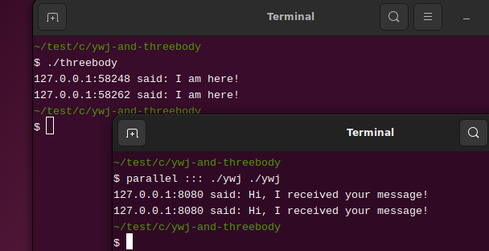

2025 年 03 月 09 日
这份不守江湖规矩的网络编程指南，实际上已经几乎完结了。一台计算机上作为服务端的进程 A，能够与另一台计算机上作为客户端的进程 B 通信，本已是网络编程的全部内容了，更何况我们额外用了面向对象的范式，封装了一些常用的套接字函数。
不过，也许你并未注意到，我们的头上飘荡着一朵乌云。假设还有一台计算机上的进程 C，令它作为客户端，与 B 同时和进程 A 通信，此时进程 A 的程序该如何设计呢？
假设 A 为 ywj，B 为 threebody，C 为另一个 ywj。
首先，需要改写 threebody。基于「封装」中实现的 sim 项目，只需将 threebody 程序写为以下形式，便可实现与两个客户端通信：
/* threebody.c */
#include "sim-network.h"
int main(void) {
SimServer *threebody = sim_server("localhost", "8080");
if (!threebody) {
fprintf(stderr, "sim_server failed!\n");
exit(-1);
}
/* 接受 2 个连接 */
for (int i = 0; i < 2; i++) {
sim_server_run(threebody);
if (sim_server_safe(threebody)) {
/* 从客户端接收信息 */
SimStr *msg = sim_server_receive(threebody);
if (msg) {
printf("%s\n", sim_str_raw(msg));
sim_str_free(msg);
}
/* 向客户端发送信息 */
msg = sim_str("threebody: Hi");
sim_server_send(threebody, msg);
sim_str_free(msg);
sim_server_close(threebody);
}
}
sim_server_free(threebody);
return 0;
}编译 threebody.c，得到 threebody：
$ gcc -I. sim-str.c sim-network.c threeboy.c -o threebody至于另一个 ywj，我们重新写一个程序作为她，如下：
/* other-ywj.c */
#include <unistd.h>
#include "sim-network.h"
int main(void) {
SimClient *ywj = sim_client("www.threebody.com", "8080");
if (!ywj) {
fprintf(stderr, "sim_client failed!\n");
exit(-1);
}
/* 延迟 15 秒，模拟存在许多运算 */
sleep(15);
/* 发送数据 */
SimStr *msg_to = sim_str("other ywj: I am here!");
sim_client_send(ywj, msg_to);
sim_str_free(msg_to);
/* 从 www.threebody.com:8080 接收信息 */
SimStr *msg_from = sim_client_receive(ywj);
if (msg_from) {
printf("%s\n", sim_str_raw(msg_from));
sim_str_free(msg_from);
}
/* 析构，退出 */
sim_client_free(ywj);
return 0;
}需要注意的是，other-ywj.c 与「封装」中的 ywj.c 的最大不同在于，前者在建立网络连接之后，在与服务端通信之前，主动延时约 15 秒，象征这个 ywj 比较犹豫迟疑……编译 other-ywj.c，得到 other-ywj：
$ gcc -I. sim-str.c sim-network.c other-ywj.c -o other-ywj现在，在 Linux 环境里开始我们的实验。首先，打开三个终端窗口，令它们的工作目录皆为 threebody、other-ywj 以及 ywj 所在的目录。ywj 是「封装」中的那个 ywj。
在第一个终端里运行 threebody：
$ ./threebody然后在第二个终端里运行 other-ywj：
$ ./other-ywj在运行 other-ywj 后，请随即尽快，假设在 5 秒之内，在第三个终端里运行 ywj：
$ ./ywj上述三个程序的运行结果如下图所示：

你会发现，在 other-ywj 运行后，它需要等待大约 15 秒，方能得到 threebody 的回应，这是正常的，因为她被我们设计为一个犹豫迟疑的人。真正让你觉得奇怪的现象应该是，随即运行的 ywj 也需要等待 10 秒左右，而且得到 threebody 的回应也是在 other-ywj 之后。
在上一节的试验中，在运行 other-ywj 之后，随即运行 ywj 为什么会陷入等待呢？
原因是，threebody 还没学会孙悟空的分身术，它只能逐一与客户端建立连接和通信。当即 other-ywj 进程先发起连接，threebody 要与它完成通信后，方能与 ywj 建立连接并通信。这种形式的通信机制，称为阻塞式通信。该通信形式，在 threebody 看来，是非常自然的——有很多人给我发信息，我自然是要逐一进行处理的，但在最后与 threebody 连接并通信的 ywj 看来，非常不合理——我几乎是与其他进程同时发起了的连接，为什么么它们能很快得到回复，而我却等待很久呢？
真正对我们有用的网络服务端，往往同一时间需要接受成千上万的客户端的连接请求。让
threebody 接受更多个甚至无数个客户端的连接，并不难，只需将上述
threebody.c 中的 for 循环结构改为 while (1)
这样的无休止循环结构，便可得到永不休息，能处理无数个客户端连接的
threebody 了。基于 other-ywj 和 ywj 的验证，显然 threebody
不可能在同一时间能接受成千上万的连接，它只适用于处理寥寥几个客户端的连接。
/* threebody.c [改] */
/* 服务端永不停息 */
while (1) {
sim_server_run(threebody);
if (sim_server_safe(threebody)) {
/* 从客户端接收信息 */
SimStr *msg = sim_server_receive(threebody);
if (msg) {
printf("%s\n", sim_str_raw(msg));
sim_str_free(msg);
}
/* 向客户端发送信息 */
msg = sim_str("threebody: Hi");
sim_server_send(threebody, msg);
sim_str_free(msg);
sim_server_close(threebody);
}
}在服务端造成通信阻塞的套接字 API 函数是封装在
sim_server_run 中的
accept，该函数在默认情况下是阻塞的，在与当前连接的客户端通信过程结束之前，accept
不会与其他客户端建立连接。实际上，用于发送和接收数据的 send
和 recv 也是阻塞的。
一些非套接字 API 函数也会造成进程阻塞，例如 other-ywj.c 中使用的
sleep 函数以及等待用户输入信息的 scanf
函数。进程被阻塞时，操作系统会将其由「运行」状态切换为「等待」状态，此时进程不会占用
CPU，直到特定事件发生（例如有客户端发起网络连接），使其能够继续运行。
事实上，并非是某这些函数导致进程阻塞，而是当这些函数所读写的文件，其状态若为阻塞模式时，便会导致这些函数出现阻塞，从而导致进程进入等待状态。在
Unix 或 Linux
中，套接字是文件描述符，亦即套接字也是文件，只是专用于网络通信。使用
socket 并辅以 connect 或 bind
而构造的套接字，默认便是阻塞状态，故而导致访问套接字的
accept、send 和 recv
这些函数出现阻塞，从而导致进程阻塞。
因文件阻塞状态导致进程在对其读写时出现阻塞，称为 I/O 阻塞，而像
sleep
函数以及其他一些时间延迟函数导致的进程阻塞，称为时间阻塞。
在大致理解进程的阻塞机制之后，我们需要考虑的问题是，在网络通信中，若将服务端的用于监听和通信的套接字设置为非阻塞状态，会发生什么？
在 Unix 或 Linux 系统中，使用 fcntl
函数可修改文件状态。我不打算认真介绍这个函数的用法，原因是，很多应用软件层面的开发者（我也是其中一员）往往对操作系统层面的文件概念并不熟悉，引入过多细节，可能会破坏学习信心。对于网络编程而言，若将一个
socket 设为非阻塞状态，只需调用下面这个封装好的函数：
/* sim-network.c ++ */
#include <fcntl.h>
/* 参数 x 是一个 socket */
static int socket_nonblock(int x) {
return fcntl(x, F_SETFL, fcntl(x, F_GETFL) | O_NONBLOCK);
}其中，fcntl(x, F_GETFL) | O_NONBLOCK 用于获取套接字
x 的当前状态标志并将其与 O_NONBLOCK
合并，这样便拥有了非阻塞状态标志，并且包含 x
原有的状态标志，然后通过 fcntl(x, F_SETFL, 新标志)
将新标志赋予 x。
真正令初学者沮丧的是这段代码中的缩写。首先，fcntl，是
file control 的意思，即控制文件状态。F_GETFL
和 F_SETFL 都是操作指令，分别是 FILE GET FLAGS
与 FILE SET FLAGS 的缩写，可驱使 fcntl
获取或设定文件状态标志。文件状态标志是一组简单的二进制位，它们可以通过位运算符
| 进行组合，从而为文件设定多种状态。
fcntl 的返回值依赖于所用的操作指令。F_GETFL
会让 fcntl 返回文件的当前状态标志，而 F_SETFL
会让它返回 0。还有一些其他的情况，现在用不到。如果 fcntl
返回 -1，表示它运行失败了。
像 fcntl
这样的函数，它的参数以及所用的位运算，散发着古奥的气息。原因是这类函数在早期的
Unix
系统诞生时就存在了。函数名与操作指令之所以简写，犹如在纸张尚未发明的年代，古人在竹简上写着简洁但难懂的语句。我们不仅需要理解它们，还需要让它们具备现代气息。
现在改写 SimServer 对象的构造函数
sim_server 和方法
sim_server_run，为监听套接字和通信套接字增加
O_NONBLOCK 标志：
/* threebody.c [改] */
SimServer *sim_server(const char *host, const char *port) {
int fd = first_valid_address(host, port, bind);
if (fd == -1) return NULL;
if (listen(fd, 10) == -1) return NULL;
SimServer *server = malloc(sizeof(SimServer));
if (!server) {
fprintf(stderr, "sim_server error: failed to malloc!\n");
return NULL;
}
socket_nonblock(fd); /* 将 fd 设为非阻塞状态 */
server->listener = fd;
server->client = -1;
server->error = NULL;
return server;
}/* threebody.c [改] */
void sim_server_run(SimServer *self) {
int fd = accept(self->listener, NULL, NULL);
if (fd == -1) {
self->error = "sim_server_run error: failed to accept!";
} else {
socket_nonblock(fd); /* 将 fd 设为非阻塞状态 */
/* 恢复 self 无错状态 */
if (self->error) self->error = NULL;
}
self->client = fd;
}重新编译 threebody.c，运行所得程序 threebody：
$ gcc -I. sim-str.c sim-network.c threebody.c -o threebody
$ ./threebody然后像上文的试验那样，在两个终端里分别且近乎同时运行 other-ywj 和 ywj，会发生什么奇迹……或灾难呢？
奇迹是有的，ywj 可以立刻得到 threebody 的回应，other-ywj 会在 15 秒后得到 threebody 的回应，这个结果正是我们所期望的，果断的 ywj 立刻得到回应，迟疑的 ywj 得到迟一些的回应。灾难也是有的，结果表明 threebody 大概率收不到来自 ywj 和 other-ywj 的信息。
threebody 无法收到来自客户端的信息，原因是
sim_server_receive
并非我们所认为的那样稳健，sim_client_receive 亦是如此。ywj
和 other-ywj 都收到了 threebody
的回复，那是因为它们的通信套接字并未设成非阻塞状态。事实上，若套接字为非阻塞状态，sim_server_send
和 sim_client_send 也可能会出现类似的问题。
现在的 threebody
是无休止运行的，完成上述试验后，在其运行的终端里，请务必使用 Ctrl + C
终止它！请务必使用 Ctrl + C 终止它！请务必使用 Ctrl + C
终止它！重要的事，要说三遍的。Ctrl + C，即摁下 Ctrl
键不放，再摁 C 键。
在「封装」中，SimClient 和
SimServer 对象的 receive 和 send
方法，分别基于 recv_robustly 和 send_robustly
函数实现，我们需要对这两个函数再作一些修改，进一步提高它们的稳健性。
在 recv_robustly 中，当套接字函数 recv
访问的套接字 x 为非阻塞状态时，recv 会直接返回
-1，而非阻塞式读取 x 所指代的文件中的内容，而
recv_robutly 对这种情况的处理方式是
ssize_t h = recv(x, data + n, remaining, 0);
if (h == -1) {
free(data);
return NULL;
}我需要告诉你一个秘密。这个秘密，我已隐瞒了很久，现在不得不说出来。Unix
或 Linux 的大多数系统调用和套接字函数，出错时，会返回
-1，同时会将一个错误码存入全局变量 errno。recv
和 send 在出错时，返回 -1，有时并非意味着错误无法挽回。
recv 遇到以下情况：
都会返回 -1，并将 errno 的值赋为
EAGAIN。上一节的 threebody 大概率收不到 other-ywj 和 ywj
发送的数据，便属于上述第 1 种情况。
send
在套接字为非阻塞状态，且系统为数据发送准备的缓冲区内容已满时，会立即返回
-1，并将 errno 的值赋为 EAGAIN。
你还需要知道，accept
函数，在用于监听的套接字为非阻塞状态且操作系统的监听队列中没有已建立的连接时，也会返回
-1，并将 errno 的值赋为 EAGAIN。
还有一个事实，accept、send 和
recv
这些套接字函数在工作时，可能会因操作系统发出的中断信号而导致出错，返回
-1，此时 errno 的值为
ENITR。可能你还不清楚何谓操作系统发出的中断信号，你可简单理解为操作系统必须处理一些紧急事务，无暇关心网络通信之事。遇到这种情况，我们也需要重新启动
accept、send 和
recv，让它们尽可能地运行成功。
基于上述的秘密，我们需要对
sim_server_run、send_robustly 和
receive_robustly 略作修改：
/* sim-network.c ++ */
#include <errno.h>/* sim-network.c ++ */
void sim_server_run(SimServer *self) {
int fd;
while (1) {
fd = accept(self->listener, NULL, NULL);
if (fd == -1) {
if (errno == EAGAIN || errno == EINTR) continue;
else {
self->error = "sim_server_run error!";
break;
}
} else {
/* 将 fd 设为非阻塞状态 */
socket_nonblock(fd);
/* 恢复 self 无错状态 */
if (self->error) self->error = NULL;
break;
}
}
self->client = fd;
}/* sim-network.c [改] */
static int send_robustly(int x, SimStr *str) {
const char *buffer = sim_str_share(str);
size_t n = sim_str_size(str); /* buffer 字节数 */
size_t m = 0; /* 发送了多少字节 */
size_t remaining = n; /* 还有多少字节未发送 */
while (m < n) {
ssize_t t = send(x, buffer + m, remaining, 0);
if (t == -1) {
if (errno == EAGAIN || errno == EINTR) continue;
else break;
}
m += t;
remaining -= t;
}
return (m < n) ? -1 : 0;
}/* sim-network.c [改] */
SimStr *recv_robustly(int x) {
size_t m = 1024;
char *data = malloc(m * sizeof(char));
size_t n = 0; /* 已接收的字节数 */
while (1) {
if (n == m) { /* 扩容 */
m *= 2;
data = realloc(data, m);
if (!data) {
free(data);
return NULL;
}
}
size_t remaining = m - n; /* 剩余空间长度 */
ssize_t h = recv(x, data + n, remaining, 0);
if (h == -1) {
if (errno == EAGAIN || errno == EINTR) continue;
else {
free(data);
return NULL;
}
} else if (h == 0) break;
else {
n += h;
if (h < remaining) break;
}
}
if (n == 0) {
free(data);
return NULL;
} else return sim_str_absorb(data, m, n);
}唉……但愿永远不再处理这些乱七八糟的安全问题。一旦追求人身安全，人必须先让自己的思维进入十八层地狱游走一番！
在 sim-network.c 中完成上述修改后，重新编译 threebody.c，然后重新做一遍上一节的试验。然后你会发现，奇迹出现了，但是灾难也出现了。奇迹是，threebody 能收到 other-ywj 和 ywj 发送的数据。灾难是，ywj 又回到不得不等待 other-ywj 先收到 threebody 回复的情况了。
事实上，上述对 recv_robustly 和
send_robustly 的修改，导致二者变成了时间阻塞，即遇到
EAGAIN 错误，就重新接收或发送数据，直至成功为止。
现在的 threebody 是无休止运行的，完成上述试验后，在其运行的终端里，请务必使用 Ctrl + C 终止它！请务必使用 Ctrl + C 终止它！请务必使用 Ctrl + C 终止它！重要的事，要说三遍的。
将套接字设为非阻塞状态后，为什么每次试验 threebody 后，我会告诫你，务必用 Ctrl + C 终止它呢？
现在，假设你在某个终端里运行了 threebody，可以不必运行 ywj 和 other-ywj。然后再打开一个终端，执行以下命令
$ top -p $(pgrep threebody)top -p 命令可以查看指定 ID
的进程的资源占用情况。$(pgrep threebody) 是子 Shell
命令，即在当前终端里运行的 Shell 里又开启了一个 Shell，让后者运行
pgrep threebody 命令，并将结果返回给上层
Shell。pgrep 的用途根据进程对应的程序名查询该进程的
ID。如果你不知道 Shell
是什么……就是终端里接受你的输入的命令并执行的这个东西。终端只是个躯体，Shell
是它的灵魂。
执行上述命令后，你会看到类似以下信息：
PID USER ... %CPU %MEM ... COMMAND
11821 garfileo ... 99.7 0.1 ... threebody重点在 CPU 那列，threebody 的运行，占用了 99.7% 的 CPU 时间！假如是冬天，你没有用 Ctrl + C 强行关闭 threebody，也许你可以不用交暖气费或开空调制暖了。
我们的头上依然还飘荡着那朵乌云，可是现在似乎又多了一朵。不过我已隐约看到可以将其驱散的希望了。请怀念这一刻吧，这大概是我们最后的田园时光了。作为服务端的进程，很快要进化得令我们这些旧时代的人觉得它面目全非，难以理解，难以调试。
现在，到了你不劳而获的时间！